Custom Object Models
There are two distinct situations where you would want to create DPIs based on a custom defined Object Model:
- Where you can model the entire Modbus device as data point with properties representing registers.
- Where you can model a register as a data point with properties representing parts of the register's bytes (see Choice of Custom Object Models over the Standard Object Models from the Additional Configuration Parameters section that describes a use case).
In both the cases you must define the object model, however you need to handle the Import Rules with a difference.
Design of Custom Object Model
Before you begin with creating your custom object model, you need to identify the properties and their data types. Usually, this is done after determining the application characteristics. For example, an electrical meter may offer measurement and configuration parameters. Using the datasheet or engineering manual of the product, you can determine the register address, data type, engineering units, range, and so on. The object model is initially formulated in a CSV file based on which parameters of the device you want to integrate and its data type. The formulation (refer Structure of the Custom Object Model Template section) can then be imported into the management station and extended with information like engineering units and range.
Structure of the Custom Object Model Template
The structure of the device can be defined in terms of the object model. Consider the following hypothetical datasheet for a Meter Type XY.
Property Name | Registry Address | Data Type | Direction |
Voltage Phase 1 | 40001 | Float | Output |
Voltage Phase 2 | 40003 | Float | Output |
Voltage Phase 3 | 40005 | Float | Output |
Current Phase 1 | 40007 | Float | Output |
Current Phase 2 | 40009 | Float | Output |
Current Phase 3 | 40011 | Float | Output |
Total Power | 40013 | Float | Output |
Total Power Apparent | 40015 | Float | Output |
Total Power Reactive | 40017 | Float | Output |
Power Factor | 40019 | Float | Output |
Energy | 40021 | Uint | Output |
Correction Factor | 40023 | Float | Input |
A CSV file for the object model according to the above data sheet looks as shown in the following image.
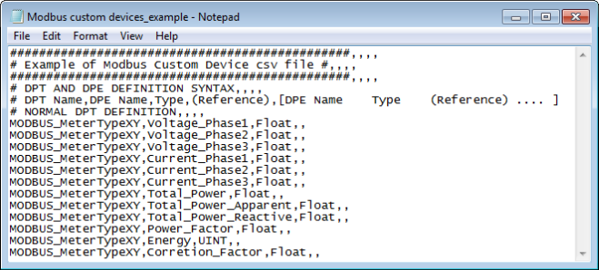
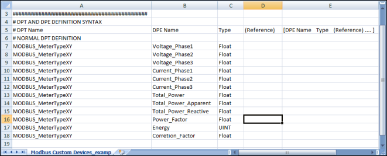
While defining the CSV file , you must specify the data points, data type element and data type for each object model you want to create in the following format:
# DPT Name;DPE Name;Type;(Reference);[DPE Name Type (Reference) .... ]
Example
Modbus_MeterTypeXY,Voltage_Phase1,Float
Data Point Type, Data Point Element, and Data Type | |
Data | Description |
DPT Name | Name of the data point of the object model. |
DPE Name | Name of the DPE (property) associated to the object model. |
Type;(Reference) | String identifying the property (element).
For details about the acceptable values, see the Table Element Types that follows. |
[DPE Name Type (Reference)] | Definition of the property (element) by name and type. |
Element Types | |
Type String | Description |
Char | Character |
Uint | Unsigned Integer |
Int | Integer |
Float | Double |
Bool | Boolean |
A CSV file template example named Modbus_template_7.0_CustomObjectModel_1.csv is provided under the following folder GmsMainProject\profiles\ModbusDataTemplate. This CSV file can be used to start creating the custom object model.
While specifying the definition for your custom object models, we recommend you to consider the following situations. In each of the situations, you can also define the InOut properties.
Situation 1
If you want to create 20 instances of MeterXY, each integrated through its own gateway interface, then you must define the CSV file as follows. Note that the Object Model name must be specified under the ObjectModel column in the Device entry.
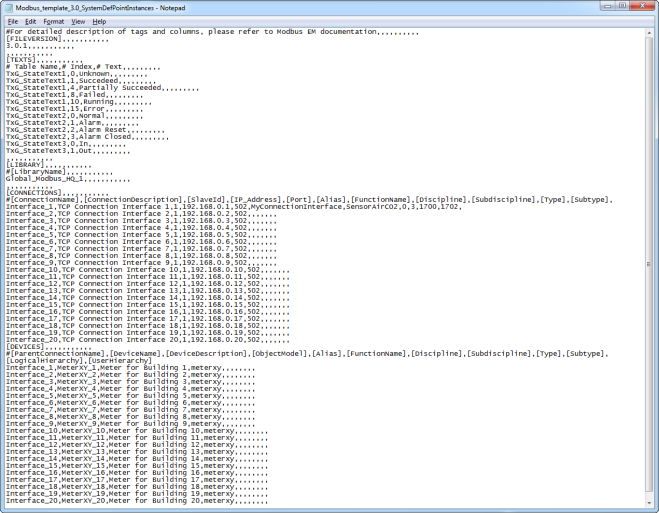
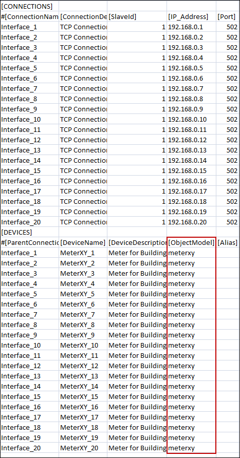
When you open the CSV file, you must enter the following elements:
- Modbus Interface
- Modbus Custom Devices
The data from the CSV file is reordered to represent the hierarchy of the data points of an Object Model to create in the Management View of System Browser.
Situation 2 for Modbus
If you want to create 20 instances of Point ABC under Meter_ABC (integrated through a single gateway interface 192.168.0.1), then you must define the CSV file as follows.
Note that the Object Model name must be specified under the ObjectModel column in the Point entry.
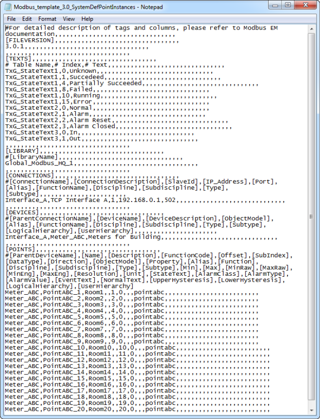
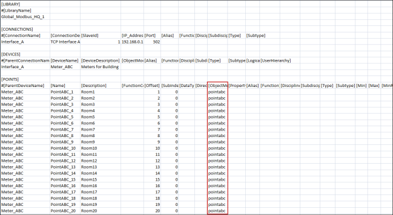
When you open the CSV file, you must enter the following elements:
- Modbus Interface
- Modbus Device
- Modbus Custom Points
Situation 3 for Modbus Fire Panel
This scenario is an extension of situation 2.
There are several Modbus devices, especially fire detectors, that have limited memory. These devices may include points addressed as a single bit because of memory restrictions; they cannot be assigned a full byte or register (two bytes). Addressing such points is accomplished through a combination of Offset and bit-level SubIndexing.
In such scenarios, Offset and SubIndex are separately defined in the Import Rules, as well as in the CSV. The cumulative values of Offset and SubIndex are calculated using the following formulas:
- Final Offset = Offset from Import Rules + Offset from CSV
- Final SubIndex = SubIndex from Import Rules + SubIndex from CSV
A register is made up of 2 bytes (or 16 bits).
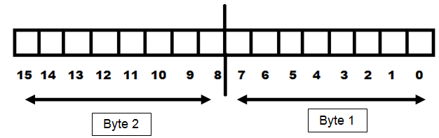
For example, a fire detector device has four Boolean Input properties. Therefore, the total memory requirement for each detector is four bits. If you have four instances of the same detector, the total memory requirement is sixteen bits, which is equal to one register. So, instead of assigning a separate register to each detector (which will occupy a total of four registers), they can all share a single register to save memory. The following sections explain two different ways of achieving this.
Situation 3 Case A
This situation applies when multiple properties occupy consecutive bits in a single register.
For example, there is a Data Model FD01 in the Import Rules so that all the properties occupy the consecutive bits in a single register, as shown as follows:
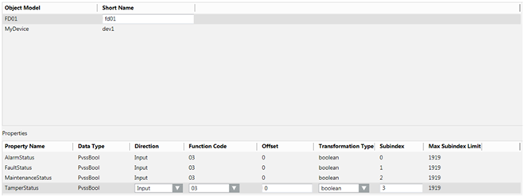

NOTE:
The data type of the properties can also be changed to GmsBool from the Object Configurator of the data model. Both mean the same. However, when the data type is GmsBool, you can associate the text groups; you cannot associate the text groups for PvssBool.
If you want to create four instances of this fire detector so that they all fit in a single register, and their properties occupy the bits in the register in the following manner:
Fire Detector Instance | Property | Bit Number in the Register |
FD01_inst01 | AlarmStatus | 0 |
FaultStatus | 1 | |
TamperStatus | 2 | |
MaintenanceStatus | 3 | |
FD01_inst02 | AlarmStatus | 4 |
FaultStatus | 5 | |
TamperStatus | 6 | |
MaintenanceStatus | 7 | |
FD01_inst03 | AlarmStatus | 8 |
FaultStatus | 9 | |
TamperStatus | 10 | |
MaintenanceStatus | 11 | |
FD01_inst04 | AlarmStatus | 12 |
FaultStatus | 13 | |
TamperStatus | 14 | |
MaintenanceStatus | 15 |
You must define the fire detector instances in the CSV file as follows.
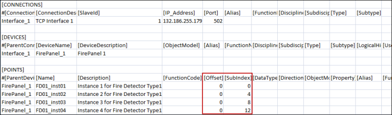
During the import, the Importer adds the Offset and SubIndex values of the object model mentioned in the Import Rules to the Offset and SubIndex of the instances mentioned in the CSV file. The formula for calculating the final address of each property is as follows:
- Final Offset = Offset mentioned in Import Rules + Offset mentioned for instance in CSV
- Final SubIndex = SubIndex mentioned in Import Rules + SubIndex mentioned for instance in CSV
- Final address = (Final Offset) + (Final SubIndex)
Fire Detector instance | Property | Offset in Object Model | SubIndex in Object Model | Offset in CSV | SubIndex in CSV | Bit number in the register |
FD01_inst01 | AlarmStatus | 0 | 0 | 0 | 0 | 0 |
FaultStatus | 0 | 1 | 0 | 0 | 1 | |
TamperStatus | 0 | 2 | 0 | 0 | 2 | |
MaintenanceStatus | 0 | 3 | 0 | 0 | 3 | |
FD01_inst02 | AlarmStatus | 0 | 0 | 0 | 4 | 4 |
FaultStatus | 0 | 1 | 0 | 4 | 5 | |
TamperStatus | 0 | 2 | 0 | 4 | 6 | |
MaintenanceStatus | 0 | 3 | 0 | 4 | 7 | |
FD01_inst03 | AlarmStatus | 0 | 0 | 0 | 8 | 8 |
FaultStatus | 0 | 1 | 0 | 8 | 9 | |
TamperStatus | 0 | 2 | 0 | 8 | 10 | |
MaintenanceStatus | 0 | 3 | 0 | 8 | 11 | |
FD01_inst04 | AlarmStatus | 0 | 0 | 0 | 12 | 12 |
FaultStatus | 0 | 1 | 0 | 12 | 13 | |
TamperStatus | 0 | 2 | 0 | 12 | 14 | |
MaintenanceStatus | 0 | 3 | 0 | 12 | 15 |
The following example of FD01_inst04.AlarmStatus may help you better understand the address calculation better.
- Final Offset = Offset mentioned in Import Rules (0) + Offset mentioned for instance in CSV (0) = 0
- Final SubIndex (or Bit Number for Offset 0) = SubIndex mentioned in Import Rules (0) + SubIndex mentioned for instance in CSV (12) = 12
- Final address = (0) + (12) = 12
Situation 3 Case B
This is a derivative of Case A of Situation 3.
In Case A, all the properties were placed consecutively. In Case B, some of these consecutive properties are placed in the lower byte, while the others in the higher byte.
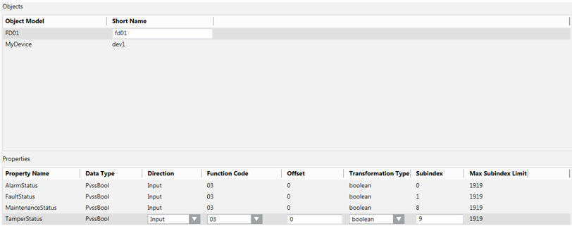
You can change the entries in the CSV file as shown below:
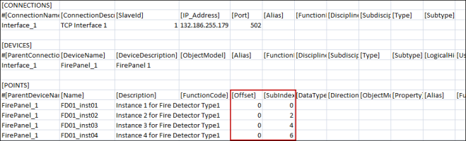
Using the same formulas for calculating the address, the final address will look as follows:
Fire Detector instance | Property | Offset in Object Model | SubIndex in Object Model | Offset in CSV | SubIndex in CSV | Bit Number in the Register |
FD01_inst01 | AlarmStatus | 0 | 0 | 0 | 0 | 0 |
FaultStatus | 0 | 1 | 0 | 0 | 1 | |
TamperStatus | 0 | 8 | 0 | 0 | 8 | |
MaintenanceStatus | 0 | 9 | 0 | 0 | 9 | |
FD01_inst02 | AlarmStatus | 0 | 0 | 0 | 2 | 2 |
FaultStatus | 0 | 1 | 0 | 2 | 3 | |
TamperStatus | 0 | 8 | 0 | 2 | 10 | |
MaintenanceStatus | 0 | 9 | 0 | 2 | 11 | |
FD01_inst03 | AlarmStatus | 0 | 0 | 0 | 4 | 4 |
FaultStatus | 0 | 1 | 0 | 4 | 5 | |
TamperStatus | 0 | 8 | 0 | 4 | 12 | |
MaintenanceStatus | 0 | 9 | 0 | 4 | 13 | |
FD01_inst04 | AlarmStatus | 0 | 0 | 0 | 6 | 6 |
FaultStatus | 0 | 1 | 0 | 6 | 7 | |
TamperStatus | 0 | 8 | 0 | 6 | 14 | |
MaintenanceStatus | 0 | 9 | 0 | 6 | 15 |
Similar to case A, the entire register is used for storing the complete Object Model instead of four different registers. However, the addressing pattern is different.
Situation 3 Case C
The data model requires two byte properties in a single register. The first property is placed in the lower byte and the second property in the higher byte.
NOTE:
PvssChar is used to represent a byte.
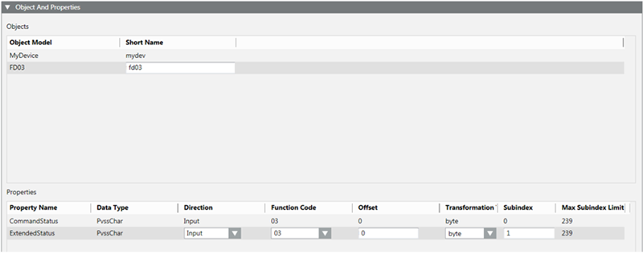
Two instances of this are created in the CSV.
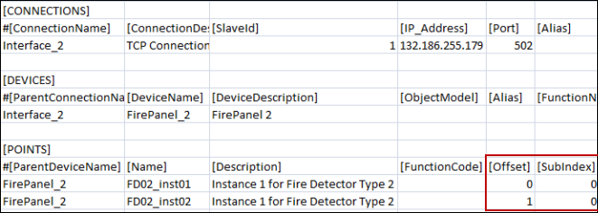
Fire Detector instance | Property | Offset in Object Model | Offset in CSV | Final Offset | SubIndex in Object Model | SubIndex in CSV | Final SubIndex |
FD03_inst01 | CommandStatus | 0 | 0 | 0 | 0 | 0 | 0 |
ExtendedStatus | 0 | 0 | 0 | 1 | 0 | 1 | |
FD03_inst02 | CommandStatus | 0 | 1 | 1 | 0 | 0 | 0 |
ExtendedStatus | 0 | 1 | 1 | 1 | 0 | 1 |
FD03_inst01 and FD03_inst02 instances each occupy a separate single register. Offset 0 indicates the first byte of the register from the base address, while Offset 1 indicates the second byte of the register from the base.
Re-Import the Object Model
When re-importing the Object Model via a CSV file, the existing Object Models are updated.
By using re-import, you can perform the following:
- Add new Object Models.
- Add or remove properties in existing Object Models.
- Update the type of an existing property of an Object Model.
- Add or update multiple Object Models using a single CSV file.
NOTE:
Re-import cannot delete any existing Object Models from the system. If you want to delete any existing Object Model, you must select the Object Model from System Browser and click Delete.